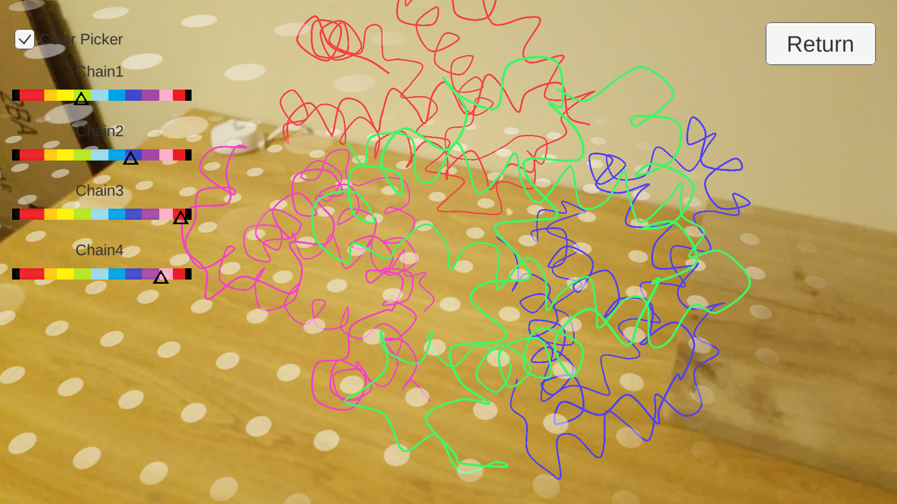

Thais Del Rosario
Projects
Japanese Kanji Writing App

This Kanji writing app helps students of the language learn the correct stroke order to write more than 6,000 kanji. This collection can be queried by the radicals they are composed of, the number of strokes it takes to write the character, and the grade they are taught in schools. After selecting a character, the user can proceed to write said character with the help of "guiding points". The user can alter the difficulty by selecting how many guiding points are shown to help them write each stroke of the character, as well as how close their stroke needs to be to the guiding points to be considered an successful stroke. After the user finishes writing the character, their accuracy will be evaluated based on how many guiding points they sucessfully hit and if they hit them in the correct order, as there is a canonical stroke-drawing order for each Kanji.
All of this data is stored within the SVG file for each Kanji, which means that more Kanji can be added by simply obtaining an SVG file representing them.
{kind=link}
AR Protein Visualizer (Mobile)
{kind=link}
PDB files describe various biological structures in text format and are freely available at RCSB's protein data bank website . This visualizer parses PDB files and displays them using 3D objects, allowing the user to customize how they are represented. Files can be downloaded from the PDB data bank directly from the device running the app if it has an internet connection. The 3D models are viewed using Unity's AR Foundation package and can be placed in surfaces recognized by the device's camera to provide a augmented learning experience. After placement, the molecular structure can be rotated, scaled, moved, and customized. Regarding customization, the user can select from six viewing modes which allow for a more complete understanding of the molecule's structure. Additionally, the user can change the color and size of specific components within each viewing mode (e.g. atoms, chains, beta sheets, helixes).
{kind=link}
{kind=link}
{kind=link}
Mutated Sequenced Data Simulator
{kind=link}
This pipeline allows the user to simulate sequenced data for a heterogeneous cancer tumor using an evolution tree of the mutations of said tumor in dot format as input. The output data is in the form of a set of reads in a FASTQ file. It makes use of the read simulator NEAT genreads. The pipeline takes as input a reference file from which to generate the reads (e.g. Chromosome 19 from the human genome), a tree of the mutations to be generated along with a list of the percents associated with each of the nodes, and two sets of VCFs (unless the user wants random mutations).
The data generated from this pipeline is useful when testing tools meant to determine the evolutionary tree of a tumor from a patient's sequenced data. Using real data to test these tools proves to be a challenge due to the lack of a "true" answer to evaluate the tool's output. Since the user knows the "true" answer when using sequenced data, they can effectively test the accuracy of these tools. The pipeline can be pulled from this repo, along with more specific instructions and requirements on its use.